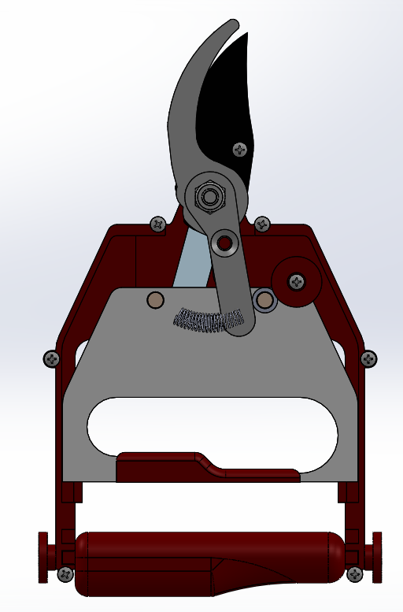
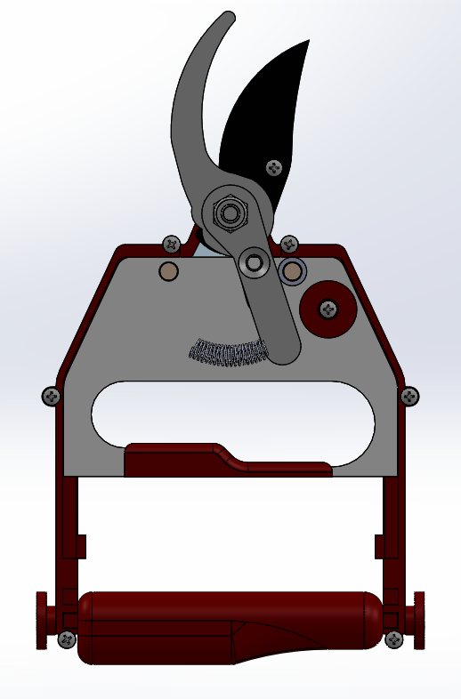
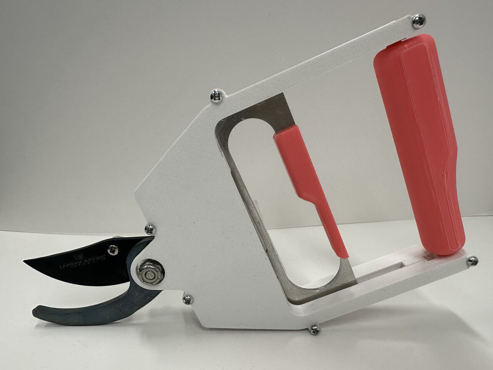

Senior Design: Garden Shears
Overall Motivation and Design
From abstract: This project focuses on the redesign of common garden shears to improve comfort and reduce fatigue for users with disabilities. The team participated in the Cultivating Resources for Employment with Assistive Technologies (CREATE) Competition that is hosted by the New York State Industries for the Disabled (NYSID). For the CREATE competition, the partner organization was the CP Unlimited collaboration with Smile Farms, a non-profit greenhouse that provides produce to local restaurants. At Smile Farms, volunteers with disabilities maintain and harvest vegetables from the garden for the sale of produce and ingredients. The primary issues highlighted by the participants in the Smile Farms project include fatigue from repeated clenching of the garden shears, pain and discomfort from needing to rotate their wrist to harvest, and a safety mechanism that is difficult to operate unless the pair of shears are consistently maintained. The newly designed shears improve ergonomics by altering the cutting motion to shift the load away from sensitive hand muscles, resulting in a 19% increase in maximum actuation. A novel linkage system increases mechanical advantage to improve the comfort of harvesting vegetables.


CAD and Final Product
The adapted design focuses on using linar actuation inline with the wrist to close the shears using a linkage system inside the case. Springs on either side of the case are used to push up the middle actuator plate. To limit the physical size of the shears for maneuverability, the plate is sandwiched between the actuator arms. To ensure both arms reset to the correct position, two springs on either side of the actuator plate were added.
